LiDAR Drone Survey
Data collection
To collect data, LiDAR uses a specialized sensor that emits pulses of light and measures the time it takes for these signals to bounce back, allowing it to create incredibly detailed 3D maps of land and terrain with pinpoint accuracy.
We utilise state-of-the-art LiDAR sensors mounted on our advanced drones to capture precise 3D data of the survey area. LiDAR technology enables us to collect data points with high accuracy and density, capturing detailed information about terrain elevation, vegetation, buildings, and other features.
Customised Survey Planning
Our team works closely with clients to understand their project requirements and objectives. We design customised survey plans tailored to each project, considering factors such as area coverage, point density, and resolution to ensure optimal data quality and relevance.
Efficient Data Acquisition
Our experienced drone pilots execute the survey missions following carefully planned flight paths. We leverage the flexibility and manoeuvrability of drones to access remote or challenging terrain, maximising data coverage while minimising operational costs and risks.
Data Processing
After data capture, we process the raw LiDAR data using specialised software to generate detailed point clouds. Our team applies sophisticated algorithms to clean, filter, and classify the point cloud data, enhancing its accuracy and usability for various applications.
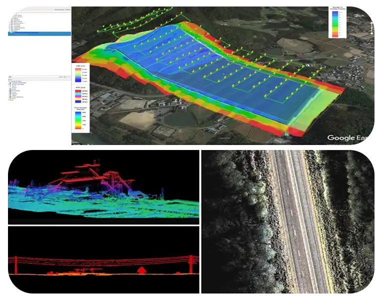
Lidar Deliverables
Depending on the particular objectives and specifications of a project, our drone LiDAR (light detection and ranging) technology offers a broad range of outcomes. Our LiDAR outputs offer the potential to provide extremely accurate and detailed topography data that is useful for a wide range of applications across various sectors. The following are potential deliverables we provide:
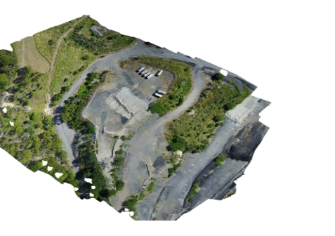
Orthomosaic map
Drone photographs are corrected for distortion and seamlessly merged during post-processing to produce a remarkably precise orthomosaic map. Every pixel on this map includes high-quality 2D geographic data (X, Y), allowing exact measurements such as horizontal distances and surface areas to be collected directly.
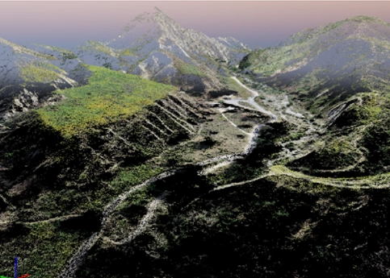
3D Point Cloud
Dense point clouds can be created by processing drone images. Every point in this cloud contains geographic coordinates (X, Y, Z) and colour information, providing an extremely precise model for measuring lengths (horizontal and vertical), as well as areas and volumes.
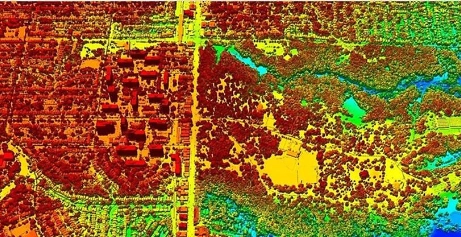
DSM
A DSM captures ‘the natural and built features' on the earth's surface. DSMs represent the bare earth and all of its above-ground features. Drone images can also be used to create DSM models of the area. Each pixel contains 2D information (X, Y) and the altitude (Z value) of the highest point for this position.
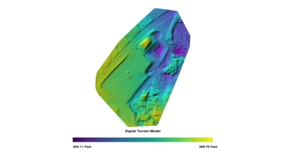
DTM
DTM's (Digital Terrain Model) are detected using aerial photography at low heights with a geometrically calibrated camera. This enables the drone to obtain all the heights of the surveyed terrain. In these models, each pixel stores 2.5D information, including the X, Y, and Z values corresponding to the highest altitude.
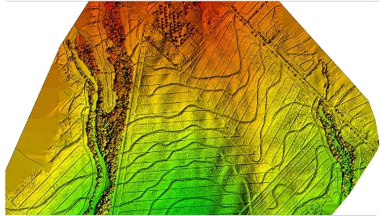
Contour map
We can obtain a greater understanding of the area the drone photographed by using a contour line map that can be created using the DTM or DSM model with specific contour intervals, depending on the requirements of the project.
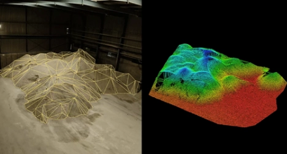
Volume Calculations
Drone LiDAR can be used to calculate the volume of materials, such as soil, rock, and gravel, with a high degree of accuracy. This information can be used for a range of applications, including mining, construction, and environmental studies.
LIDAR is used for Infrastructure
Lidar drones play a pivotal role in infrastructure development and maintenance. They are used to create precise 3D models of roads, bridges, and other critical infrastructure. These models aid in design, construction, and monitoring, ensuring safety and efficiency.
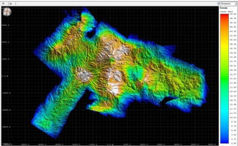
The utilization of LiDAR drones in construction projects has revolutionized the way engineers gather and utilize critical site information. By deploying LiDAR drones, highly detailed three-dimensional (3D) visualizations of construction sites are generated, providing engineers with precise data on topography, potential hazards, and unstable ground conditions. This invaluable information enables engineers to make informed decisions regarding foundation types, excavation requirements, and site layouts.
With precise knowledge of the site's characteristics, engineers can optimize foundation designs, minimize excavation needs, and improve site planning, ultimately enhancing the safety and efficiency of construction projects. The use of LiDAR drones streamlines the data collection process, reduces risks, and saves costs. By leveraging this cutting-edge technology, construction projects can be completed more quickly, safely, and accurately, resulting in improved outcomes and enhanced project success. The integration of LiDAR drones in construction has transformed the industry, enabling engineers to build with confidence and precision.
The fusion of LiDAR technology with drones has brought about a paradigm shift in the maintenance and inspection of critical infrastructure, including pipelines, turbines, and power lines. These sophisticated drones are equipped to capture intricate and precise data, enabling comprehensive evaluations that prioritize safety and risk reduction. By leveraging LiDAR technology, inspectors can remotely identify potential issues, such as cracks, deformations, and other defects, without the need for hazardous and time-consuming in-person inspections.
The captured data empowers maintenance teams to prioritize repairs and maintenance activities, ensuring the long-term durability and safety of vital infrastructure. This proactive approach minimizes the risk of unexpected failures, reduces downtime, and mitigates the potential for environmental damage. By harnessing the capabilities of LiDAR drones, infrastructure managers can optimize maintenance schedules, extend asset lifetimes, and ensure the reliable operation of critical systems. The integration of LiDAR drones has transformed the inspection and maintenance of vital infrastructure, setting a new benchmark for safety, efficiency, and effectiveness. This cutting-edge technology has revolutionized the industry, enabling infrastructure managers to make data-driven decisions, improve asset performance, and ensure the continued reliability of critical infrastructure.
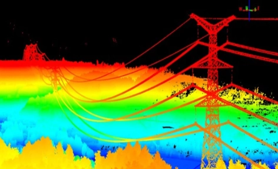
Mining
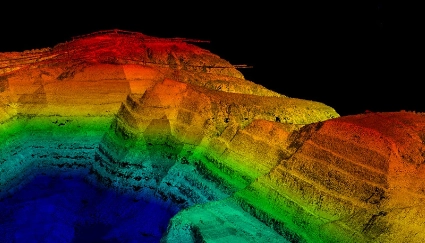
Slope stability analysis
LiDAR technology is used in mining locations to analyse slope stability. By identifying high walls and unstable slopes, it lowers the chance of collapse. This proactive approach to safety reduces the possibility of catastrophic accidents, which can be especially serious in mining environments, and improves worker safety.
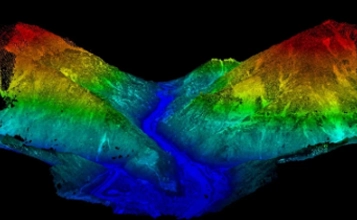
Exploration and mapping of minerals
Mineral mapping and mineral exploration can be assisted by LiDAR technology. It provides geologists with useful information for planning future exploration endeavours and streamlining mining operations by helping them locate possible mineral deposits and map those that already exist. The sustainable management of mineral resources depends on this data.
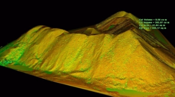
Stockpile volume measurement
For accurate estimation of the amount of material placed in mining operations, LiDAR drones are essential. Accurate data is crucial for inventory management since it provides sufficient reserves and lowers the possibility of running out of essential products. Additionally, it facilitates effective resource allocation and logistics.
Agriculture and forestry
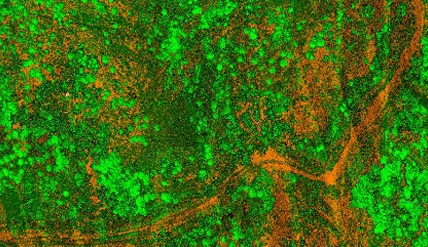
Soil mapping
LiDAR technology provides precise data on soil composition, moisture, and nutrient levels, enabling a thorough assessment of soil fertility and quality. This information optimizes fertilization, guides soil management, and ensures resources are allocated effectively. By identifying nutrient deficiencies or excesses, farmers can target inputs, reducing waste and environmental impact. This data-driven approach boosts crop yields, promotes sustainable soil management, and ensures resources are used where needed, leading to improved agricultural productivity and reduced environmental footprint.
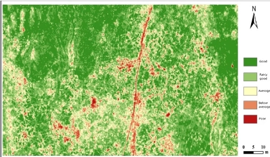
Crop health analysis
In agriculture, LiDAR drones play a vital role in monitoring crop health, enabling early detection of pests, diseases, and water stress. By capturing accurate data on canopy density and crop conditions, farmers can identify areas requiring attention. This insights enable targeted interventions, such as precision irrigation and pest control, to prevent crop damage and optimize yields. With LiDAR drones, farmers can respond promptly to crop stress, reducing waste and environmental impact. By leveraging this technology, farmers can increase efficiency, reduce costs, and boost crop production, ultimately contributing to a more sustainable and productive agricultural practice.
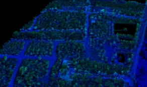
Forest mapping
LiDAR drones provide detailed 3D models of forests that provide details about the diversity and basic structure of the forests. Ecosystem knowledge and preservation are made easier by this data. It enables foresters to choose conservation techniques and land use with knowledge, safeguarding the environment in the process. The examination of tree density in forests is made faster by LiDAR data. Identification of heavily populated areas and support for thinning and harvesting decisions are made possible by this method. Workers in forestry can increase timber output and support sustainable forest management techniques by enhancing tree density.
Construction
LiDAR drones help the construction sector generate highly accurate 3D models of construction sites. This increases construction efficiency by allowing conflict resolution, progress tracking, and project planning.
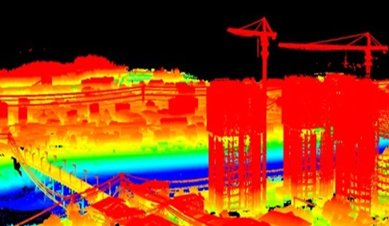
The integration of LiDAR drones in construction site monitoring has brought about a paradigm shift in the industry, transforming the way projects are planned, executed, and delivered. By leveraging LiDAR drone technology, construction professionals can capture highly accurate and detailed data, creating comprehensive 3D models that accurately represent the site's pre-construction and ongoing construction environments. These intricate models facilitate a shared understanding among contractors, engineers, and architects, enabling collaborative decision-making and informed project planning.
With access to precise topographic data, stakeholders can proactively identify potential issues, monitor progress, and make data-driven decisions, ensuring projects are completed on time, within budget, and to the required quality standards. The adoption of LiDAR drones in construction site monitoring has led to a significant reduction in errors, improved communication among stakeholders, and increased efficiency. By harnessing the power of LiDAR technology, construction professionals can drive innovation, ensure successful project outcomes, and set new benchmarks for excellence in construction. The use of LiDAR drones has become an essential tool in modern construction, enabling professionals to build with precision, accuracy, and confidence.
Geology
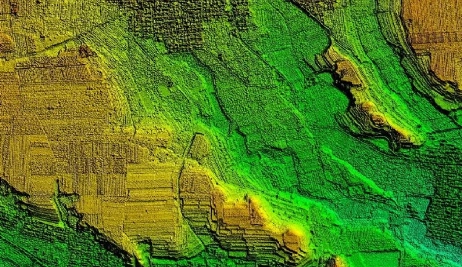
Geological survey
LiDAR drones conduct geological surveys, providing precise topographic data for analyzing the earth's surface and subsurface. This crucial information helps understand geological conditions and features, making LiDAR technology a valuable tool for exploration and research. It aids in identifying structures, monitoring changes, and informing decisions in fields like mining, engineering, and environmental science.
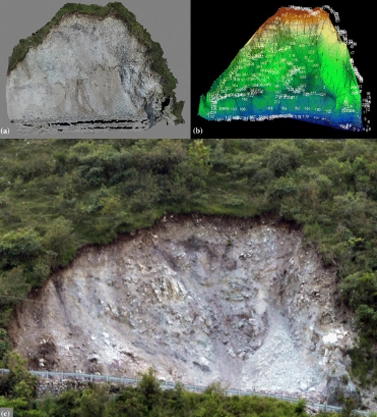
Exploration and mapping of minerals
Mineral mapping and mineral exploration can be assisted by LiDAR technology. It provides geologists with useful information for planning future exploration endeavours and streamlining mining operations by helping them locate possible mineral deposits and map those that already exist. The sustainable management of mineral resources depends on this data.
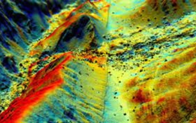
Landslide risk estimation
LiDAR technology plays a critical role in monitoring unstable slopes and assessing landslide risk. The data collected helps identify potential landslide locations, enabling the development of mitigation strategies to protect infrastructure and communities. This information is vital for informing measures to prevent or minimize landslide damage and ensure public safety.
Crash scene investigation
LiDAR drones allow accident reconstruction researchers and law enforcement to reconstruct accident scenes with accuracy. This information is utilised to support legal procedures and identify contributing variables and causes.
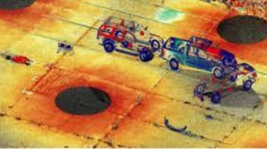
LiDAR-equipped drones excel at creating highly precise 3D reconstructions of accident scenes. These drones capture essential details such as vehicle positions, skid marks, and collision dynamics with remarkable accuracy. The data gathered through these reconstructions plays a vital role in piecing together the events leading up to an accident and comprehending its underlying causes. Such detailed and accurate reconstructions are indispensable for both accident analysis and legal investigations.
By providing a clear and comprehensive view of the scene, LiDAR drones help investigators determine the sequence of events, establish facts, and support legal proceedings. This technology enhances the accuracy of accident reconstructions, ensuring that every minute detail is documented and analyzed. The use of LiDAR drones not only improves the efficiency of investigations but also aids in delivering justice by providing concrete evidence. Therefore, the integration of LiDAR technology in accident reconstruction represents a significant advancement in forensic science, offering unparalleled precision and reliability in understanding and resolving incidents.
LiDAR data is invaluable for visualizing accident scenes, aiding in both documentation and estimation processes. From this data, detailed visual representations can be created, depicting crucial aspects such as vehicle speeds, collision angles, and the trajectories of involved objects. These visualizations provide investigators with fresh insights and serve as compelling evidence in legal contexts. By transforming raw data into comprehensible graphics, LiDAR technology enhances the clarity and thoroughness of accident reconstructions.
These detailed visual aids support investigators in analyzing the sequence of events and understanding the dynamics of the collision. Moreover, they offer robust documentation that can be pivotal in court, presenting clear and accurate depictions of the accident. The ability to visualize such detailed information ensures that all aspects of the incident are thoroughly examined and communicated effectively. Consequently, LiDAR-generated visualizations are an essential tool in both forensic analysis and legal investigations, offering a precise and comprehensive view that supports the pursuit of justice and informed decision-making.
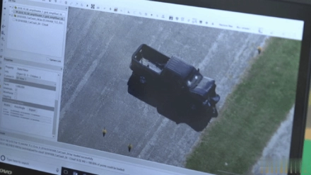
Our Features

5x Faster Delivery
Our dedicated team of GIS experts works tirelessly to swiftly process and analyze drone survey data, ensuring prompt delivery, often ahead of schedule.
99% Accurate Measurement
We achieve up to 99% accuracy in our results, employing advanced machine learning techniques for precise yield estimation, volumetric measurements, and more.

Team of Experts
Our seasoned team of GIS engineers, drone pilots, and software engineers operates round-the-clock, delivering unparalleled service excellence.
Advanced Equipment
Equipped with cutting-edge drones featuring high-resolution sensors, our surveying capabilities are bolstered by both DJI models and custom-made drones.
Frequently asked questions
What is a drone LiDAR survey?
LiDAR sends laser pulses from the drone and measures their return to build a dense 3D point cloud of the ground and everything on it. Because some pulses pass through gaps in vegetation, LiDAR can map the ground surface under trees.
When should I choose LiDAR over photogrammetry?
Choose LiDAR for corridors and sites with vegetation, for power lines and for very detailed terrain. Photogrammetry is usually more economical for open ground and gives a true-colour orthomosaic. Many projects use both.
What deliverables come from a LiDAR survey?
A classified point cloud (ground, vegetation, buildings, wires), a digital terrain model, a digital surface model, contours and cross-sections, in formats ready for CAD and GIS.
How accurate is drone LiDAR?
Accuracy depends on the sensor, flying height and ground control. Survey-grade drone LiDAR checked against ground control typically reaches a few centimetres vertically on hard surfaces.